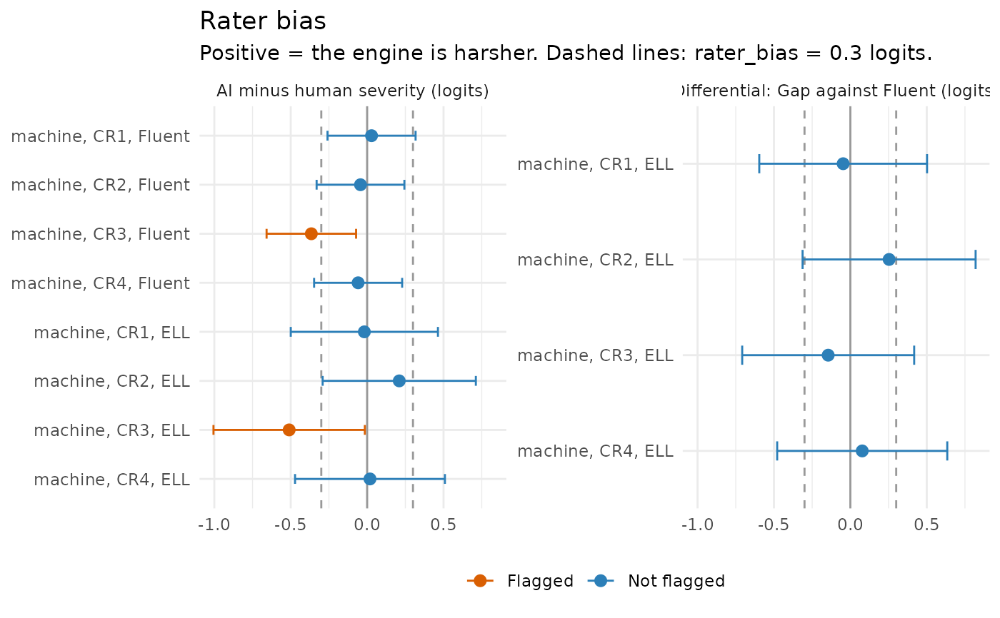

Fits a many-facet Rasch model (Linacre, 1989) in which human raters and an automated scoring engine are elements of one rater facet, so that the severity of each rater sits on the same logit scale as the test takers and the items. A severe engine shows up as a rater above the human raters on the map; an engine that is severe only for some items or some groups of test takers shows up in the bias analysis.
Arguments
- data
a data frame with one row per scored response (person and item), with one column of scores for each rater, as essays and aiscored_cr; or, with
score, one row per rating.- raters
names of the score columns, one per rater (for example
c("human1", "human2", "machine")). Withscore, the name of the column that says who gave the rating.- person, item
names of the columns with the person and item IDs.
- group
optional name of a column with a person-level grouping (for example
"group"for language groups, or"year"for drift).- ai
names of the raters that are AI scoring engines. Defaults to the raters whose name contains
machine,engine,aiorauto.- by_item
estimate each rater's severity separately for each item?
- score
with long data (one row per rating), the name of the score column.
- labels
optional display names for the raters, in the order of
raters(for examplec("Human 1", "Human 2", "Engine")).- rules
thresholds from
mv_rules()(rater_bias).- x, object
an
mv_facetsobject.- ...
not used.
- type
"wright"for the Wright map with a rater column, or"bias"for the AI-minus-human severity gaps with 95% intervals.- bins
number of bins of the person histogram.
Value
An object of class mv_facets: A list with raters (one row
per rater: overall severity, se, and whether it is an AI rater),
severity (one row per rater, item and group), gaps (AI minus human
severity in each item and group, with se and flag), differential
(with group: the focal group's gap minus the reference group's),
items (the item thresholds, difficulty and se), persons (id,
group, theta), flags, checks and model (the eirm::eirm()
fit). It has print(), tidy() (the flags) and autoplot() methods
(type = "wright" for the Wright map with a rater column, or
type = "bias" for the gaps), and gg_wright() draws its Wright map.
Pass it to ai_audit() in components to add its flags to an audit.
Details
The model is fit as an explanatory item response model with the
eirm package: The scores are
split into adjacent-category steps with eirm::polyreformat(), so that
the model is a partial credit model (Rasch for 0/1 scores) with a rater
facet, estimated as a generalized linear mixed model with a random person
effect,
$$\mathrm{logit}\, P(X_{pir} = k \mid k-1 \text{ or } k) = \theta_p - \delta_{ik} - \lambda_{r},$$
where \(\lambda_r\) is the severity of rater \(r\). With
by_item = TRUE each rater has a severity for each item
(\(\lambda_{ri}\), the rater-by-item bias terms of a facets analysis);
with group each rater has a severity for each group of test takers
(\(\lambda_{rg}\)), and the group means of \(\theta\) are estimated
as well. Severities are centred within each item and group, so they read
as "harsher (positive) or more lenient (negative) than the average rater",
and the item thresholds are those of the average rater.
For each AI rater (ai), the gap between its severity and the mean
severity of the human raters is tested in every item and group. A gap is
flagged when it is larger than rater_bias logits in mv_rules() and
more than 1.96 standard errors from 0 (check "rater severity"). With
group, the difference between a focal group's gap and the reference
group's (the first level) is flagged in the same way (check
"differential severity"): The engine is harsher, relative to human
raters, for one group of test takers than for another. Use a year or
engine-version column as group to check for drift.
The adjacent-category split treats the steps of a response as independent, so the fit is a close approximation of the partial credit model rather than its exact likelihood (the approach of the eirm package). The human score columns are reading slots ("first read", "second read"), not individual raters, unless the data say otherwise.
References
Linacre, J. M. (1989). Many-facet Rasch measurement. MESA Press.
Bulut, O., Gorgun, G., & Yildirim-Erbasli, S. N. (2021). Estimating explanatory extensions of dichotomous and polytomous Rasch models: The eirm package in R. Psych, 3(3), 308-321. doi:10.3390/psych3030023
Wind, S. A., & Peterson, M. E. (2018). A systematic review of methods for evaluating rating quality in language assessment. Language Testing, 35(2), 161-192.
See also
scoring_shift() for the item thresholds and person scores
under human and AI scoring; ai_audit(), agreement_report().
Examples
# \donttest{
if (requireNamespace("eirm", quietly = TRUE)) {
# the double-scored validity sample of the AI-scored science test
cr <- aiscored_cr[aiscored_cr$year == 2026 & !is.na(aiscored_cr$human1), ]
fx <- rater_facets(cr, raters = c("human1", "human2", "machine"),
labels = c("Human 1", "Human 2", "Engine"))
fx
gg_wright(fx)
# severity by item and by language group: where is the engine biased?
fx2 <- rater_facets(cr, raters = c("human1", "human2", "machine"),
group = "group", by_item = TRUE)
fx2$gaps
autoplot(fx2, type = "bias")
}

# }